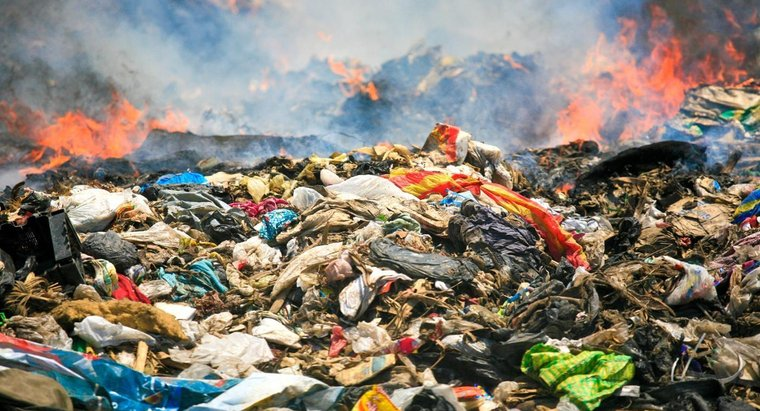

Land Pollution

About
Land Pollution is when the Earth's surface and ground layer is damaged by pollution. In many cases, the effects of land pollution can take a long time to be seen or noticed. Things like landfills, mining, and certain farming practices are some of the biggest causes of pollution on the ground layer. Landfills full of plastic, and harmful chemicals contaminate the soil and garbage is spread even faster because they start to overflow and spread. Mining and farming that uses pesticides, disturbs the well-being of the ground by creating gaps and holes within the Earth, spreading highly dangerous materials like uranium throughout the Earth and causing the surface and soil to become toxic or dangerous.
Effects
Soil contamination and ground pollution affects human health along with the environment. Toxins found in the soil and water can end up leading to diseases and illnesses like cancer and even major birth defects. Ground pollution seriously affects the environment too. If the ground is contaminated with poisons, it can also seep into the groundwater and other nearby water sources. Plastics and toxic waste can also be detrimental to wildlife species. They can be poisoned by toxins or be harmed physically by garbage. Ways to help fix ground pollution is properly disposing of garbage and waste like recycling bottles and plastic, trying to use less plastic, and putting contaminated substances in proper waste bins.